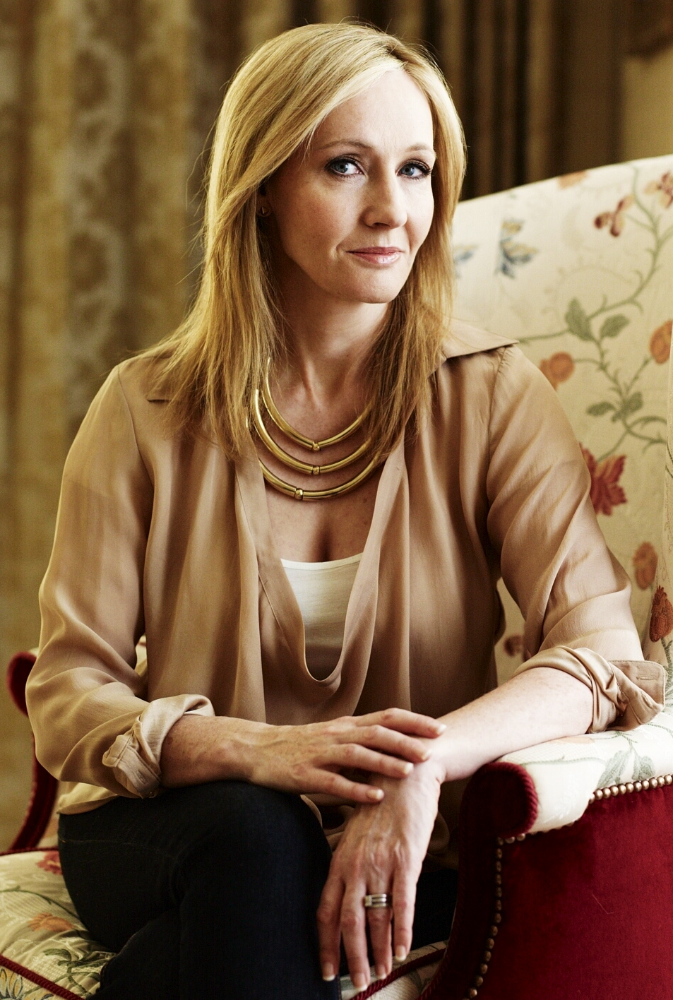

História
Harry Potter é uma série de sete romances de fantasia escrita pela autora britânica J. K. Rowling. A série narra as aventuras de um jovem bruxo, Harry James Potter, o personagem-título, e seus amigos Ronald Weasley e Hermione Granger, os quais são alunos da Escola de Magia e Bruxaria de Hogwarts.
A criadora
Famosa por escrever em bares, com a primogênita ao lado no carrinho, ela enfrentou uma série de dificuldades até atingir a riqueza e a fama como escritora, passando-se longos anos até que o Harry Potter e a Pedra Filosofal chegasse às prateleiras, com a ajuda de seu agente literário Christopher Little. Desde então, J. K. Rowling escreveu os outros seis livros que a tornaram rica, e capacitaram-na a contribuir para instituições que ajudam a combater doenças, injustiças e a pobreza. LIVROS ESCRITOS
- Harry Potter e a Pedra Filosofal - 1997
- Harry Potter e a Câmara Secreta - 1998
- Harry Potter e o Prisioneiro de Azkaban - 1999
- Harry Potter e o Cálice de Fogo - 2000
- Animais Fantásticos e Onde Habitam - 2001
- Quadribol Através dos Séculos - 2001
- Harry Potter e a Ordem da Fênix - 2003
- Harry Potter e o Enigma do Príncipe - 2005
- Harry Potter e as Relíquias da Morte - 2007
- Os Contos de Beedle, O Bardo - 2008
- Morte Súbita - 2012
- O Chamado do Cuco - 2013
- O Bicho-da-Seda - 2014
- Career of Evil - 2015
O mundo de Harry Potter
O parque temático “O Mundo Mágico de Harry Potter” foi inaugurado em junho de 2010 e trouxe com ele o que os fãs mais esperavam: poder sentir como é estar em Hogwarts, ou em Hogsmeade, ou até mesmo na companhia de Harry, Ron e Hermione. A Warner Bros. Entertainment Inc. e Universal Orlando Resort fizeram uma parceria para criar o primeiro ambiente no mundo completamente imerso em Harry Potter, sendo baseado nos famosos livros de J.K. Rowling e nos filmes da Warner Bros. Projetado como um “parque dentro de um parque”, o novo ambiente se tornou parte das Ilhas de Aventura da Universal, no Universal Orlando Resort. Inspirado pelas atraentes histórias e personagens de J.K. Rowling – e fiel às paisagens visuais dos filmes – “O Mundo Mágico de Harry Potter” proporciona uma oportunidade única de se experimentar o mundo mágico de Harry e seus amigos. O parque permite que os visitantes vejam alguns dos principais locais encontrados nos livros e nos filmes, incluindo até mesmo a misteriosa Floresta.
Hogwarts
A Escola de Magia e Bruxaria de Hogwarts, ou simplesmente Hogwarts, é um internato fictício de magia para bruxos e bruxas com idades entre os onze e dezessete anos. É o palco principal para os primeiros seis livros da série Harry Potter, de JK Rowling, cada livro equivalendo a um ano letivo. No volume derradeiro da série, Harry Potter e as Relíquias da Morte, a maior parte da história se passa fora de Hogwarts, uma vez que os personagens principais, Harry Potter, Rony Weasley e Hermione Granger não atendem ao sétimo e último grau de ensino (embora Rowling tenha declarado que Hermione retorna à escola depois dos acontecimentos descritos em Harry Potter e as Relíquias da Morte para prestar os seus exames de Nível Incrivelmente Exaustivo em Magia). A batalha final no livro e na série, no entanto, ocorre em Hogwarts. Rowling afirmou que pode ter intencionalmente "captado" o nome da planta cujo nome em inglês é hogwort (Croton capitatus), que tinha visto nos Jardins Botânicos Reais de Kew algum tempo antes de iniciar a série Harry Potter. Ainda assim, as expressões "the Hogwarts" e "Hoggwart" já haviam sido mencionadas na literatura antes da série, no livro de 1954 How to be Topp, escrito por Geoffrey Willans.
Harry Potter Filme
Harry Potter é uma série de filmes britânico-americana baseada nos livros homônimos da autora britânica J. K. Rowling. A série é distribuída pela Warner Bros. e consiste em oito filmes, iniciando com Harry Potter e a Pedra Filosofal (2001) e finalizando com Harry Potter e as Relíquias da Morte - Parte 2 (2011). É a série cinematográfica de maior bilheteria de todos os tempos, com US $ 7,7 bilhões em receitas em todo o mundo. Todos os filmes se encontram na lista dos 50 filmes de maior bilheteria da história (em dólares e sem ajuste de inflação). A série foi produzida por David Heyman e tem Daniel Radcliffe, Rupert Grint e Emma Watson como os três personagens principais, Harry Potter, Rony Weasley e Hermione Granger, respectivamente. Quatro diretores trabalharam na série: Chris Columbus, Alfonso Cuarón, Mike Newell e David Yates. A produção levou mais de dez anos para ser concluída, com o Arco de história principal seguindo a busca de Harry Potter para superar seu conflito com Lord Voldemort..